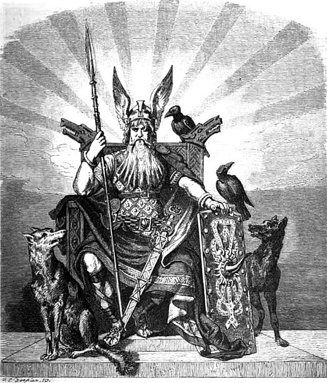
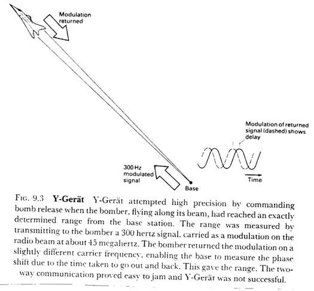
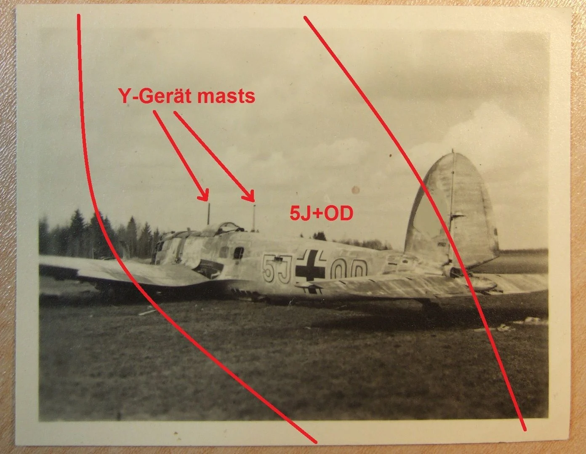

레이더 개발 이야기 (33) - 농락 당한 애꾸눈 신
게시: 2023-05-11T06:30:47+09:00
<전파 전쟁에 문과도 한몫 했다> 코벤트리 폭격 이후 익스거레트조차 영국놈들의 전파 방해에 막히게 되자 루프트바페는 준비하고 있던 비장의 마지막 카드를 내밈. 이건 X-Gerät의 뒤를 잇는 Y-Gerät. 영국이 이 입실론거레트에 대해 알게 된 것은 역시나 독일의 암호 체계 Enigma를 해독했기 때문. 입실론거레트라는 단어가 어느 순간부터 자주 나오기 시작하고 영국의 전파 방해에 지장을 받지 않는 것처럼 보이는 폭격 사례들이 등장하기 시작. 로열 에어포스는 대체 이번에는 어떤 원리를 이용한 전파 항법이길래 재밍을 피할 수 있는 것일까를 고민. 그런데 이니그마를 자세히 분석해보니, 입실론거레트를 부르는 다른 이름이 자주 등장. 그 이름은 보탄(Wotan). 고대 독일 신화에 등장하는 보탄은 스칸디나비아의 오딘에 해당하는 신. 그런데 입실론거레트를 분석하던 영국 공군성 정보부의 Reginald V. Jones는 여태까지 보아온 나찌 독일 코드명들은 문학적 특징을 가지는 것을 알고 있었음. 즉, 입실론거레트가 보탄이 가진 특성을 가졌을 것이라고 생각. 그래서 영국 공군성에서는 급히 독일 신화 및 문학 전문가를 수배하여 보탄의 특징을 정리했는데, 가장 눈에 띄는 사실은 보탄은 오딘처럼 애꾸눈 신이라는 사실. 존스는 크니커바인이나 익스거레트 모두 2개의 빔을 교차시켜 목표물 상공을 표시한다는 것을 상기하고, 게르만 신화 좋아하는 나찌놈들이 입실론거레트를 보탄이라고 부르는 이유는 바로 입실론거레트가 여태까지와는 달리 하나의 빔만을 이용하는 시스템이기 때문이라고 확신. 크니커바인이나 익스거레트가 2개의 빔을 교차시켰던 이유는 전파 빔으로는 방향만 알려줄 수 있을 뿐 거리를 알려줄 수 없기 때문. 그런데 하나의 빔만으로 전파 항법을 구현했다는 것은 어떻게든 하나의 빔으로 거리까지 계산 가능했다는 것을 암시. 생각해보면 영국이 자랑하는 방공 레이더 시스템인 Chain Home은 오히려 방향보다는 거리 측정부터 시작. 그러니 전파로 거리를 측정하는 방법은 당연히 가능. 그러나 구체적으로 어떤 방법을 썼을까? 설마 레이더처럼 전파 빔이 폭격기를 때리고 돌아오는 반사파를 측정했을까? 거기에 대한 답은 의외의 곳에서 나옴.

** 그러나 사실 존스가 보탄이라는 이름에서 입실론거레트가 하나의 빔만 사용하는 항법 장치라고 확신했던 것은 순전히 운빨이었다고. 영국이 몰랐을 뿐 나찌 독일은 익스거레트를 보탄1, 입실론거레트를 보탄2라고 불렀음. 즉 보탄이 애꾸인 것과는 전혀 무관한 작명이었음.
<오슬로 리포트의 제공자> 존스는 1939년 11월, 노르웨이 오슬로에 있는 영국 대사관에 익명의 독일 과학자가 전달한 나찌 독일의 각종 기술 현황에 대한 문서, 즉 흔히 Oslo report라고 일컬어지는 문서를 면밀히 분석했었음. 그리고 그 안에는 아군 항공기와 기지 사이의 거리를 측정하기 위한 장치에 대한 정보가 있었음. 그 비결은 의외로 간단했는데, 바로 transponder를 사용하는 것. 무선응답기 정도로 번역되는 transponder는 어떤 특정 신호가 수신되면 거기에 반응하여 특정 신호를 반송하는 장치. 가장 대표적인 트랜스폰더는 바로 IFF (Idenitification Friend or Foe), 즉 피아 구분 장치. 그런데 그걸로 어떻게 거리를 측정하나? 입실론거레트를 장착한 루프트바페 폭격기는 프랑스 해안에 설치된 독일 기지국에서 쏘는 전파에 실린 신호를 받으면 거기에 대응하는 신호를 반송했는데, 지상 기지국에서는 그 신호를 받아 자신이 보낸 신호의 위상(phase)와 비교하면 매우 정확하게 그 폭격기와의 거리를 알 수 있었음 (사진).

바로 오슬로 리포트에 그 원리가 실려 있었기 때문에 영국 공군성의 존스는 입실론거레트의 원리를 짐작할 수 있었는데, 이 오슬로 리포트의 작성자는 독일의 수학자이자 물리학자인 Hans Ferdinand Mayer. 그는 은밀히 나찌에 반대하는 양심적 독일인으로서 당시 지멘스 연구소 소장으로 근무했기 때문에 나찌 독일이 보유한 각종 기술을 담은 문서를 정리할 수 있었던 것. 그는 결국 1943년 나찌에 체포되어 정치범 수용소에 끌려갔는데 죄목은 오슬로 리포트가 아니라 BBC를 청취하는 등 나찌에 비판적인 행위를 했다는 것. 나찌도 영국 정보부도, 심지어 마이어의 가족들도 그가 오슬로 리포트의 작성자라는 것을 모르고 있었음. 그는 종전 이후에도 나찌 추종자들의 해꼬지를 염려하여 자신이 오슬로 리포트의 작성자라는 것을 밝히지 않았고, 미국으로 이민간 이후인 1955년에야 영국 공군성의 존스를 만나 자신이 그 장본인임을 밝혔음. 그러나 독일에 남은 친인척들의 안위 때문에라도 여전히 그의 비밀은 엄수되었고, 심지어 가족들에게도 마이어는 1977년에야 자신이 오슬로 리포트의 장본인임을 밝힘.
<우수한 아리아인들이 섬 것들에게 농락당하다> 입실론거레트가 무슨 방식으로 폭격기를 유도하는지 알게 되었으니 재밍은 누워서 떡먹기. 무엇보다 루프트바페는 매우 운이 나빴음. 입실론거레트에는 45MHz의 빔이 사용되었는데, 하필 BBC가 TV 방송용으로 준비를 완료해둔 주파수가 딱 그 주파수였음. 그래서 런던 Alexandra Palace(사진1)에 이미 그 주파수의 강력한 방송 설비가 완비되어 있었음.
영국 공군성의 존시는 루프트바페 폭격기가 보내야 할 응답신호를 알렉산드라 궁의 BBC TV 방송 안테나에서 쏘기 시작. 그 신호를 수신하여 자동으로 거리 계산을 수행한 프랑스 해안의 독일 기지국들에서는 당연히 엉터리 거리 측정값을 반송. 폭격기 조종사들은 지상 기지국 놈들이 계산을 엉터리로 한다고 불평했고 지상 기지국에서는 뭔가 폭격기 장비에 접촉불량이 있는 모양이라고 불평. 아무리 계산 결과를 재점검하고 트랜스폰더 장치를 재정비해도 오차가 계속 발생하자, 나중에는 루프트바페에서 '아무래도 이 트랜스폰더를 이용하는 입실론거레트의 근본 원리 자체에 결함이 있는 모양'이라고 생각할 정도. 결국 루프트바페는 영국이 입실론거레트마저 재밍하고 있다는 사실을 깨달았음. 뭘 해도 다 재밍을 당하자 결국 루프트바페는 전파를 이용한 항법 자체를 포기. 전파 전쟁에서 완패를 인정하고 포기할 정도로 독일애들이 그렇게 근성이 없었는가 하면 꼭 그런 것만은 아니고 이때 즈음해서 히틀러가 battle of Britain을 포기하고 소련 침공을 시작했기 때문.

(Y-Gerät 안테나를 장착한 채 불시착한 He-111 폭격기.)